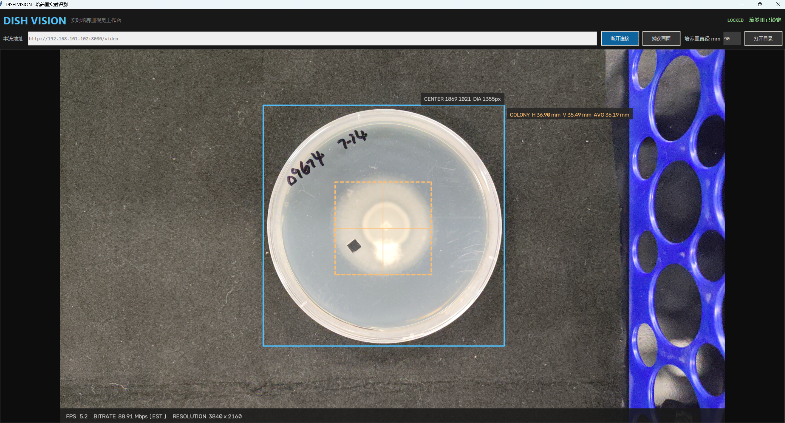

前言
在科研工作者，我们经常需要通过测量菌落的直径来作为数据指标，但是，测量这件事情耗费了大量人力，时间，以及估读会影响准确性。基于此，我开发了Windows上的一个自动识别培养皿和菌落的脚本程序。
软件与说明书
关于这个工具的使用说明都在压缩包里面的使用说明.md文件中，以下是工具文件：
关于手机上的串流摄像头，我这里推荐使用 IP WebCam 这个软件，它可以在 Google Play 上下载到，免费版就已经够用了。在这里建议串流质量拉到最高（默认 50，你拉到 100，对应的就是码率），分辨率也拉到最高（我的摄像头支持 3840×2160），帧率拉低一点，在 10 fps 就已经够了（我们主要还是拍照嘛，你设置个 120 fps 又不是打游戏），这样总体带宽码率在 100 Mbps 以下，成像效果就非常不错了。
目前因为我没有高级的摄像机（我的摄像机就是手机），所以我们并没有搞有线连接的摄像头数据流方案，如果你用雷电4协议的话，理论带宽就能到到双向 40 Gbps，这可不得了啊不得了，100 Mbps 说实话还是有点糊的呢。
更多说明你就看说明书吧！
预览效果
